Missions étudiantes rémunérées · Junior UTBM : Engage-toi pour améliorer tes compétences !
Travailler pour la Junior, c’est te permettre de développer tes compétences techniques, humaines et organisationnelles en parallèle de tes études, le tout avec un contrat de travail aménagé !
Le principe
Qu’est-ce qu’une Junior ?
Les Junior sont des associations à vocation économique et pédagogique, à but non lucratif. Ce sont des associations étudiantes implantées dans les établissements d’enseignement supérieur et qui permettent de mettre en relation étudiant et entreprise pour le bien des deux parties.
À la Junior UTBM, tu réalises des missions étudiantes rémunérées pour des entreprises : un job étudiant d’ingénieur qui t’apporte une expérience professionnelle concrète, en parallèle de tes études à l’UTBM.
Ton futur rôle
Exemples de missions
Tu peux être, par exemple :
- Développeur·se Full Stack
- Concepteur·trice d’installations électriques
- Chargé·e de projet
- Concepteur·trice de produits innovants
- Développeur·se Front End
- Designer UI
- Concepteur·trice de systèmes
FAQ
Tes questions sur les missions
Les missions sont-elles rémunérées ?
Tout travail mérite salaire ! Les missions sont toutes rémunérées.
Quel temps dois-je accorder aux missions ?
Les missions sont préparées en collaboration avec les suiveurs d’études et l’entreprise. Tu peux ainsi donner le nombre d’heures que tu peux accorder à la Junior pour qu’un arrangement soit trouvé entre toi et l’entreprise !
Ai-je le niveau pour travailler pour la Junior ?
Nous étudierons attentivement tes compétences et ton profil afin que les missions se déroulent le mieux possible pour toi et pour l’entreprise. Si tu es engagé·e pour une mission, nous nous assurerons que tu as le niveau requis pour la réaliser !
Est-ce que je suis accompagné·e pendant les missions ?
Les suiveurs d’études qui travaillent pour la Junior ont pour rôle de trouver des missions et d’accompagner les étudiants pendant celles-ci. Tu auras toujours quelqu’un pour t’assister en cas de souci !
Intéressé·e ?
Ne perds pas plus de temps…